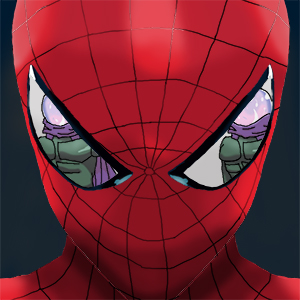
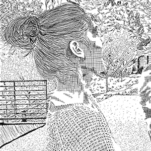
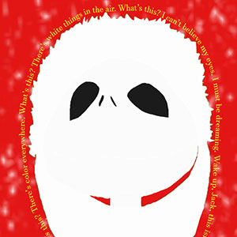
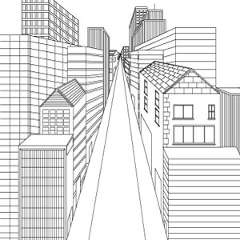

©2016 Spider-man with Mysterio in the reflection. Photoshop.

©2016 A project done in a class that incorporated the creative use of lines. Photoshop.
©2016 Another artwork completed in a class that was supposed to be how I perceive myself to be. Photoshop

©2016 This was another project that mainly concentrated on figure and space. Illustrator and Photoshop.

©2016 Another piece that allowed me to engage my skills in the perspective field. Illustrator.